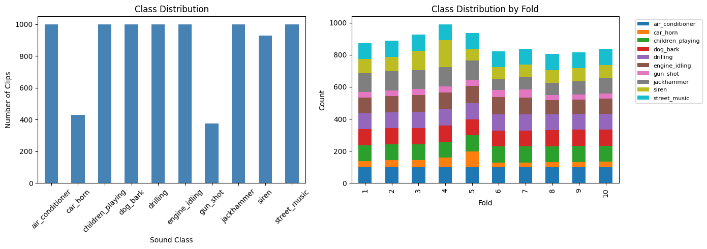
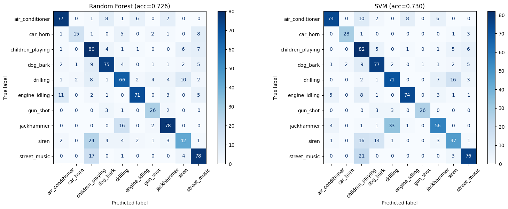
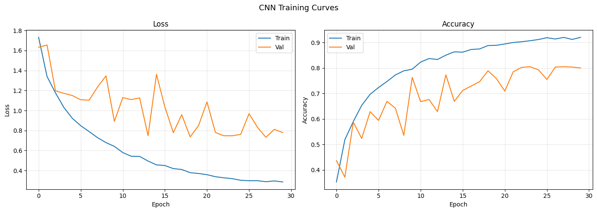
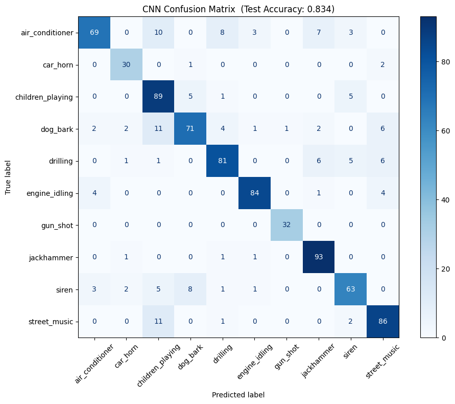
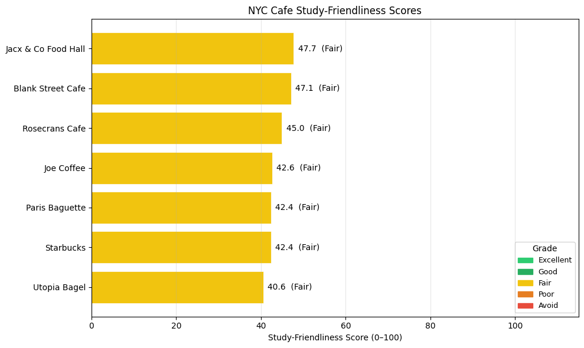
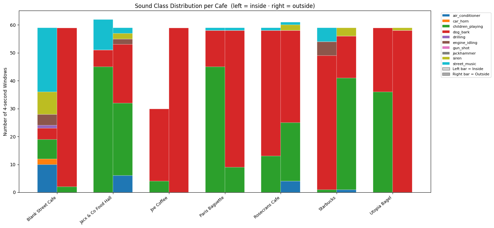

Jun Lee — ML Class Project
I spend a lot of time studying in cafes. Or trying to, anyway. If you've ever sat down at a coffee shop in Manhattan with your laptop and headphones only to realize the construction next door makes it impossible to think — you know the problem. Some places have this nice, steady background hum that you can tune out. Others hit you with random car horns every 30 seconds.
The thing is, existing tools don't help much here. Google Maps tells you the coffee is good and there's seating, but nothing about whether you'll be able to focus. Yelp might mention "noisy" or "quiet" in reviews, but that's subjective and inconsistent. A few apps measure decibel levels, but loudness alone misses the point — a 60dB air conditioner is fine, a 60dB car horn is not.
So I built a system that classifies what types of sounds are around a cafe, weights them by how distracting each type is, and produces a study-friendliness score. I picked 7 cafes across Greenwich Village and Long Island City, recorded 2 minutes of audio at each (inside and outside), and ran the recordings through a CNN trained on urban sounds.
The short version: all 7 cafes landed in the "Fair" range (40.56–47.74 out of 100). That's a narrower spread than I expected, and it taught me something interesting about domain gaps in ML that I'll get into later.
Environmental sound classification has grown a lot in the last decade. The landmark dataset for urban sounds is UrbanSound8K (Salamon, Jacoby & Bello, 2014) — 8,732 labeled audio clips organized into 10 categories like air conditioner, car horn, drilling, and siren. Each clip is ≤4 seconds, drawn from field recordings uploaded to Freesound.
The original paper established baselines around 68% accuracy using hand-crafted features (MFCCs) with SVMs and random forests. Piczak (2015) then showed that CNNs operating on mel-spectrograms — essentially treating audio as an image — could push past 73%. Salamon & Bello (2017) added data augmentation (time-stretching, pitch-shifting, background mixing) and reached 79% on the same benchmark.
The key insight across all this work: spectrograms turn audio classification into a vision problem, and CNNs are very good at vision problems.
NYC Open Data provides geospatial datasets that are useful for characterizing neighborhoods. Two relevant ones:
Cartwright et al. (2020) deployed acoustic sensors across NYC and produced SONYC-UST-V2 — 18,510 recordings with block-level coordinates and multilabel annotations across 23 fine-grained sound classes.
Nobody has combined sound classification with spatial data to produce location-specific study-friendliness scores. That's what this project does.
A fair question: do you actually need ML here? Couldn't you just measure decibels?
I thought about this. A simple dB threshold approach is simple and interpretable. But it misses the key dimension: sound type. A 60dB air conditioner is fine; a 60dB car horn is not. Intermittent, unpredictable sounds are cognitively disrupting in a way that steady background noise isn't.
ML lets me go from "how loud is it?" to "what kind of sounds are these, and how distracting is each type?" The CNN gives a probability distribution over 10 sound classes per segment, which feeds directly into the scoring formula.
8,732 clips across 10 classes, pre-split into 10 folds. Most classes have ~1,000 clips; car horn (429) and gun shot (374) are smaller. I followed the fold protocol strictly to prevent data leakage.

Figure 1: UrbanSound8K class distribution. Car horn (429) and gun shot (374) are smaller but remain easy to classify due to distinctive spectral signatures.7 cafes across Greenwich Village, West Village, and Long Island City: Blank Street, Jacx & Co Food Hall, Rosecrans, Joe Coffee, Paris Baguette, Starbucks, Utopia Bagel. At each cafe I recorded ~2 minutes of audio both inside and outside (14 recordings total).
| Cafe | Wi-Fi Hotspots (200m) |
|---|---|
| Joe Coffee | 6 |
| Rosecrans Cafe | 5 |
| Blank Street Cafe | 4 |
| Paris Baguette | 3 |
| Jacx & Co Food Hall | 2 |
| Starbucks | 2 |
| Utopia Bagel | 1 |
Baseline: 240-dim MFCC vector (40 coefficients × 3 derivatives × 2 stats). CNN: 128-bin log-mel spectrograms, shape (128, 173) per 4-second clip.
| Model | Configuration |
|---|---|
| Random Forest | 200 trees, no max depth |
| SVM | RBF kernel, C=10, gamma='scale' |
Input (1, 128, 173)
→ Conv Block 1: 32 filters, 3×3, BatchNorm, ReLU, MaxPool 2×2
→ Conv Block 2: 64 filters, 3×3, BatchNorm, ReLU, MaxPool 2×2
→ Conv Block 3: 128 filters, 3×3, BatchNorm, ReLU, MaxPool 2×2
→ Conv Block 4: 256 filters, 3×3, BatchNorm, ReLU, MaxPool 2×2
→ Global Average Pooling → Dropout (0.3) → Dense 128 → Dropout (0.3) → Dense 10
~390K parameters. 30 epochs, Adam + cosine annealing, Colab A100 (96.6s). Best val: 80.51% at epoch 24.
| Class | Weight | Why |
|---|---|---|
| Air conditioner | 0.10 | Steady hum, easily tuned out |
| Engine idling | 0.15 | Low-frequency constant drone |
| Street music | 0.40 | Variable |
| Children playing | 0.50 | Moderate, variable pitch |
| Dog bark | 0.60 | Sudden, unpredictable |
| Siren | 0.85 | Loud, urgent |
| Car horn | 0.90 | Attention-grabbing |
| Drilling | 0.95 | Sustained and very loud |
| Jackhammer | 0.95 | Sustained and very loud |
| Gun shot | 1.00 | Maximum alarm response |
final_score = 0.9 × acoustic_score
+ 0.1 × min(wifi_count / 10, 1.0) × 100
- 0.05 × min(eatery_count / 50, 1.0) × 100
| Model | Single Split (Fold 10) | 10-Fold CV |
|---|---|---|
| Random Forest | 72.64% | 67.36% ± 4.49% |
| SVM (RBF, C=10) | 73.00% | 68.24% ± 5.54% |
| CNN (4-block) | 83.39% | — |

Figure 2: Baseline confusion matrices on fold 10.
Figure 3: CNN training curves over 30 epochs. Validation accuracy plateaus near 80% around epoch 20.
Figure 4: CNN confusion matrix on fold 10 (83.39% accuracy).| Cafe | Avg Score | Grade | Best Recording |
|---|---|---|---|
| Jacx & Co Food Hall | 47.74 | Fair | 50.85 (outside) |
| Blank Street Cafe | 47.14 | Fair | 55.51 (inside) |
| Rosecrans Cafe | 44.95 | Fair | 46.23 (outside) |
| Joe Coffee | 42.60 | Fair | 41.33 (inside) |
| Paris Baguette | 42.42 | Fair | 47.97 (inside) |
| Starbucks | 42.42 | Fair | 46.36 (outside) |
| Utopia Bagel | 40.56 | Fair | 46.10 (inside) |

Figure 5: All 7 cafes score "Fair" within a 7.2-point band — a symptom of the domain gap.
Figure 6: Predicted sound class distribution per cafe (inside vs. outside).Key finding: Blank Street Cafe inside scored 55.51 — 15.2 points above its own outside (40.34), the largest gap across all venues.
The CNN beats baselines by +10 points. The inside/outside split reveals real acoustic isolation differences. The scoring pipeline is interpretable end-to-end.
All cafes scored "Fair." A 7-point spread is too narrow to be useful. Root cause: the domain gap.
UrbanSound8K has no cafe-specific sounds (espresso machines, cutlery, conversations). The CNN force-maps cafe audio onto mid-distraction classes like street_music and children_playing, compressing all scores into 40–55. This doesn't mean every cafe is equally study-friendly — it means the classifier can't distinguish them with these training categories.
Privacy: Recordings capture ambient sound in public spaces, including conversation fragments. A production system should process audio on-device and transmit only class probabilities.
Bias: Distraction weights reflect my preferences. Someone with ADHD might find steady noise more disruptive; a personalization layer would help.
Business impact: Low scores could hurt cafes for reasons outside their control (street construction, traffic). The score measures surrounding acoustics, not cafe quality.
The pipeline works end-to-end: record → classify → score → grade. The CNN achieves 83.39% on UrbanSound8K, competitive with published results. The practical results were humbling — all 7 cafes "Fair," barely distinguishable. That outcome exposed the domain gap between training data and deployment, one of the most common failure modes in applied ML.
If I were advising someone: Blank Street's inside is genuinely quieter (55.51). For the rest, check if there's construction on the block that day.